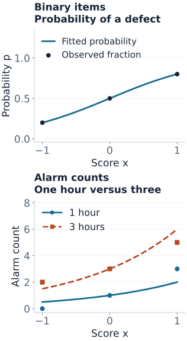
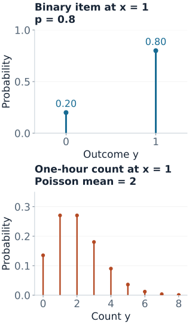

Generalized Linear Models
A model can predict an 80% probability of a defective item, or an average of 1.5 alarms in a monitoring window. Neither prediction says that an individual item is 0.8 defective or that a window contains half an alarm. A generalized linear model (GLM) separates the distribution of the observed outcome from the regression model for its mean.
We will fit two small models at the same operating-setting score $x$: one for whether an item is defective, and a separate model for the number of monitoring alarms. These are different responses and datasets, not two encodings of the same event.
The Three Pieces of a GLM
- Response family: a conditional distribution for $Y$ given the predictors. It specifies possible outcomes and a variance pattern.
- Linear predictor: a score $\eta=x^\top\beta+o$, including an intercept and any known offset $o$.
- Link: a function $g$ satisfying $g(\mu)=\eta$, where $\mu=E[Y\mid x]$. The inverse link produces the mean: $\mu=g^{-1}(\eta)$.
| Piece | Binary item outcome | Alarm count |
|---|---|---|
| Response | $Y\in\{0,1\}$ | $Y\in\{0,1,2,\ldots\}$ |
| Family | Bernoulli with probability $p$ | Poisson with mean $\mu$ |
| Conditional mean | $E[Y\mid x]=p$ | $E[Y\mid x,t]=\mu$ |
| Link | $\log[p/(1-p)]=\eta$ | $\log\mu=\eta$ |
| Inverse link | $p=1/(1+e^{-\eta})$ | $\mu=e^\eta$ |
| Conditional variance | $p(1-p)$ | $\mu$ |
The link acts on the conditional mean, not on each observed response. Logistic regression does not take the logit of observed zeros and ones. Poisson regression does not require taking $\log y$, which would fail at zero. The statsmodels GLM reference sets out the family, mean, link, and variance relationships.
“Linear” means linear in the coefficients on the score scale. The design can include polynomial terms or interactions; the inverse link can then make the mean curve nonlinear in the original predictor.
Example 1: Fit a Probability from Binary Outcomes
At each score $x\in\{-1,0,1\}$, inspect ten independent items under otherwise comparable conditions. Each item contributes one binary outcome: 1 for defective, 0 otherwise.
| Score $x$ | Items $n$ | Defects $k$ | Observed fraction $k/n$ |
|---|---|---|---|
| $-1$ | 10 | 2 | 0.2 |
| 0 | 10 | 5 | 0.5 |
| 1 | 10 | 8 | 0.8 |
For one item, $Y\mid x\sim\operatorname{Bernoulli}(p(x))$. For a group of $n$ independent items sharing $p$, the total is $K\mid x\sim\operatorname{Binomial}(n,p(x))$. Its mean is $np$ and its variance is $np(1-p)$. The link below models the probability $p$, not the group's expected number $np$.
$$\operatorname{logit}p(x)=\beta_0+\beta_1x.$$The maximum-likelihood fit for these deliberately simple data is
$$\hat\beta_0=0,\qquad \hat\beta_1=\log4\approx1.386294.$$To see why, transform the three observed fractions to log-odds: $\log(0.2/0.8)=-\log4$, $\log(0.5/0.5)=0$, and $\log(0.8/0.2)=\log4$. They lie exactly on this line. Each group's binomial likelihood is maximized at its observed fraction, and this one model attains all three maxima simultaneously. This coincidence is special to the constructed data: ordinary least squares on empirical logits is not generally binomial maximum likelihood. The code also verifies the fit numerically.
For a new item at $x=1$, the calculation is
$$\eta=0+(\log4)(1)=1.386294,\qquad p=\frac{e^\eta}{1+e^\eta}=\frac4{1+4}=0.8.$$The predicted mean is 0.8 and the conditional variance is $0.8(0.2)=0.16$. The next observation remains either 0 or 1. Among ten new independent items at that setting, the predicted defect count has mean 8 and variance 1.6; it is not guaranteed to equal 8.
A one-unit increase in $x$ multiplies the odds by $e^{\beta_1}=4$. It does not multiply probability by four: going from $x=0$ to $x=1$ changes probability from 0.5 to 0.8. All training groups contain successes and failures, so this is not complete separation, even though the fitted group fractions match exactly.
Example 2: Fit Counts While Accounting for Exposure
Now count monitoring alarms in separate windows. Here $t$ is the observed window length in hours, and $\lambda(x)$ is the alarm rate per hour. Assume each window has a stable conditional rate, with independent counts across windows.
| $x$ | Exposure $t$ | Count $y$ | Fitted mean $\hat\mu$ |
|---|---|---|---|
| $-1$ | 1 hour | 0 | 0.5 |
| $-1$ | 3 hours | 2 | 1.5 |
| 0 | 1 hour | 1 | 1 |
| 0 | 3 hours | 3 | 3 |
| 1 | 1 hour | 3 | 2 |
| 1 | 3 hours | 5 | 6 |
Model the response as
$$Y_i\mid x_i,t_i\sim\operatorname{Poisson}(\mu_i),\qquad \mu_i=t_i\lambda(x_i),$$ $$\eta_i=\log\mu_i=\underbrace{\log t_i}_{\text{offset}}+\alpha_0+\alpha_1x_i.$$The offset has coefficient fixed at one. It encodes the assumption that doubling exposure at the same rate doubles the expected count. If exposure is supplied through an API, check whether it expects $t$ or $\log t$: statsmodels GLM accepts either exposure=t or offset=np.log(t) with a log link; do not supply both for the same exposure.
At scores $-1,0,1$, the total counts are $2,4,8$ and total exposure is four hours each. A freely fitted rate at each score would maximize its Poisson likelihood at total count divided by total exposure: $0.5,1,2$ per hour. Because their logs form a line, one regression attains all three group maxima, giving the exact fit
$$\hat\alpha_0=0,\qquad \hat\alpha_1=\log2\approx0.693147,\qquad \hat\lambda(x)=2^x.$$At $x=1$ and $t=3$, keep the full score distinct from the log-rate:
$$\log\hat\lambda=\log2,\qquad \eta=\log3+\log2=\log6,\qquad \hat\mu=e^\eta=6.$$The expected count and its Poisson variance are both 6, so its conditional SD is $\sqrt6\approx2.449$. A one-unit increase in $x$ doubles the rate and, at fixed exposure, doubles the expected count. A three-hour window instead of one hour triples expected count without changing the rate.
These are fitted associations in constructed data, not causal effects of changing the setting. Exposure proportionality and the log-linear rate relationship are substantive assumptions that real data must support.

A Mean Curve Is Not an Outcome Distribution
The inverse link alone returns a number. The family tells us what observations can occur around it. At $x=1$:
- One inspected item: the fitted Bernoulli model assigns probability 0.2 to $Y=0$ and 0.8 to $Y=1$.
- One hour of monitoring: the fitted Poisson model has mean 2 and assigns $P(Y=j)=e^{-2}2^j/j!$ to each nonnegative integer $j$.
For that Poisson window, $P(Y=0)=e^{-2}\approx0.1353$ and $P(Y=2)=2e^{-2}\approx0.2707$. Even when the mean is the integer 2, the model does not predict certainty at 2. Over three hours at the same setting, the mean becomes 6 and the zero probability falls to $e^{-6}\approx0.00248$.

A binary “any alarm?” outcome derived from a Poisson count would have probability $1-e^{-\mu}$, not $\mu$. It would also not automatically have a logit-linear mean. This is why the Bernoulli item example and Poisson alarm example are separate response questions.
Why These Models Belong to One Family of Methods
Nelder and Wedderburn’s original GLM paper unifies these models through exponential-family responses and iterative weighted regression. For individual, unweighted responses, an exponential-dispersion form is
$$f(y;\theta,\phi)=\exp\left\{\frac{y\theta-b(\theta)}{a(\phi)}+c(y,\phi)\right\}.$$The natural parameter is $\theta$; the function $b$ determines moments: $E[Y]=b'(\theta)$ and $\operatorname{Var}(Y)=a(\phi)b''(\theta)$. For Bernoulli and Poisson, the dispersion scale is fixed at one.
| Family | Natural parameter $\theta$ | $b(\theta)$ | Mean $b'(\theta)$ |
|---|---|---|---|
| Bernoulli | $\log[p/(1-p)]$ | $\log(1+e^\theta)$ | $p$ |
| Poisson | $\log\mu$ | $e^\theta$ | $\mu$ |
A canonical link makes $\eta=\theta$: logit for Bernoulli, log for Poisson. Other valid links can be used when justified; a Bernoulli probit model, for example, uses the standard normal CDF as its inverse link. Choosing a link and choosing a response distribution are separate decisions. The R family reference lists supported links and distinguishes ordinary families from quasi families.
IRLS: One Concrete Update
General datasets do not have the convenient exact relationships used above. Maximum-likelihood fitting typically iterates. Fisher scoring can be written as iteratively reweighted least squares (IRLS). At the current fitted mean, define a working response and a weight:
$$z_i=\eta_i+(y_i-\mu_i)g'(\mu_i),\qquad w_i=\frac{1}{\operatorname{Var}(Y_i)[g'(\mu_i)]^2}.$$Solve weighted least squares of $z-o$ on the design matrix, then recompute means, working responses, and weights. The subtraction keeps a known offset fixed. These weights are a local device for fitting the GLM, not externally supplied measurement precisions.
For our grouped binomial data, let $r_i=k_i/n_i$ and use the probability scale. Then
$$z_i=\eta_i+\frac{r_i-p_i}{p_i(1-p_i)},\qquad w_i=n_ip_i(1-p_i).$$Start at $\beta=(0,0)$, so every $p_i=0.5$. With $r=(0.2,0.5,0.8)$, this gives $z=(-1.2,0,1.2)$ and $w=(2.5,2.5,2.5)$. The first weighted line fit has intercept 0 and slope 1.2. Repeating the update converges to slope $\log4\approx1.386294$.
For Poisson with a log link, the working weight is $w_i=\mu_i$ and $z_i=\eta_i+(y_i-\mu_i)/\mu_i$. In the alarm example the regression update uses $z_i-\log t_i$. Forgetting this subtraction would estimate a different model. Although Poisson variance increases with the mean, its relative SD is $1/\sqrt{\mu}$ and decreases; the working weight applies on the log-mean scale.
Reproduce both fits and the fitted means
import numpy as np
from scipy.special import expit
def irls(X, y, family, trials=None, offset=None):
# Teaching solver for these small, well-behaved examples.
offset = np.zeros(len(y)) if offset is None else offset
beta = np.zeros(X.shape[1])
for _ in range(50):
eta = X @ beta + offset
if family == "binomial":
mean = expit(eta)
variance = mean * (1 - mean)
w = trials * variance
z = eta + (y / trials - mean) / variance
else: # Poisson log link
mean = np.exp(eta)
w = mean
z = eta + (y - mean) / mean
root_w = np.sqrt(w)
new = np.linalg.lstsq(X * root_w[:, None],
(z - offset) * root_w, rcond=None)[0]
if np.max(np.abs(new - beta)) < 1e-12:
return new
beta = new
raise RuntimeError("IRLS did not converge")
x = np.array([-1., 0., 1.])
X = np.column_stack([np.ones(3), x])
b = irls(X, np.array([2., 5., 8.]), "binomial", trials=np.full(3, 10.))
print("binomial coefficients:", b, "probabilities:", expit(X @ b))
xp = np.repeat(x, 2)
Xp = np.column_stack([np.ones(6), xp])
t = np.tile([1., 3.], 3)
y = np.array([0., 2., 1., 3., 3., 5.])
a = irls(Xp, y, "poisson", offset=np.log(t))
print("Poisson coefficients:", a, "means:", t * np.exp(Xp @ a))The figure generator also checks the estimates with a separate numerical optimizer, verifies grouped versus individual Bernoulli fits, checks probabilities and score equations, and reproduces both figures. General-purpose solvers additionally need safeguards for ill conditioning, overflow, and boundary estimates.
Complete or quasi-complete separation can make an unpenalized logistic fit lack a finite optimum. Large coefficients or an iteration limit are not evidence of a reliable fitted probability. Penalties or other suitable estimation methods can address this problem; see Newton and IRLS for more optimization detail.
Check the Mean and the Distribution Separately
Deviance compares the fitted likelihood with a saturated model that can fit each response unit separately. For a Poisson row, its contribution is
$$d_i=2\left[y_i\log(y_i/\mu_i)-(y_i-\mu_i)\right],$$with $0\log(0/\mu)=0$. For the first alarm window, $y=0$ and $\mu=0.5$, so $d=1$. For the final window, $y=5$ and $\mu=6$, so $d\approx0.176784$. Summing all six gives deviance $1.760303$. These are training-fit summaries, not held-out prediction scores or proof that the assumed family is correct.
The Poisson variance-equals-mean statement is conditional. Comparing the pooled sample variance with the pooled sample mean mixes windows with different $x$ and $t$. Instead examine residual patterns and variation among comparable observations. Pearson residuals use $(y_i-\mu_i)/\sqrt{\mu_i}$ for Poisson; systematic dependence or changing excess spread can signal a missing mean term, clustering, or an inadequate count family.
For an individual Bernoulli outcome, variance is necessarily $p(1-p)$. Extra-binomial variation concerns grouped totals or dependence among trials; there is no free dispersion parameter that changes a single Bernoulli variable's variance while retaining the same probability. In the item example, shared batch effects would undermine the independent-binomial assumption.
These small datasets were designed to make calculations transparent. Their neat fitted relationships and small training discrepancies should not be read as evidence that either model is adequate for a real process.
When the Starting Family Is Inadequate
- Overdispersed counts: a negative-binomial model can use variance $\mu+\alpha\mu^2$. Quasi-Poisson instead specifies a mean-variance relationship with variance $\phi\mu$, without supplying a complete probability model. These choices do not address every source of dependence.
- Correlated items or windows: group effects, a suitable mixed model, or a marginal approach such as GEE may be needed. Changing the inverse link does not make dependent observations independent.
- Many zeros: first compare with the fitted count model. Our one-hour Poisson example already assigns 13.5% probability to zero. A zero-inflated or hurdle model needs a defensible additional process.
- A different outcome type: a Gamma GLM can model strictly positive continuous responses; a Gaussian identity-link GLM gives ordinary linear regression. Neither is a replacement for a binary or integer-count distribution merely because its mean can be positive.
Validation and Interpretation Boundaries
Fit feature transformations, variable selection, penalties, and any extra dispersion parameters using training data. Select choices using validation folds appropriate to future use: group items from the same batch when evaluating new batches, and respect time when forecasting. Final-test outcomes must not influence those choices.
For the item model, assess probability calibration as well as discrimination. A classification threshold is a separate decision that depends on error costs. For counts, compare predicted and observed totals at appropriate exposures and inspect predictive dispersion, not only mean error. Report evaluation on unused observations; neither figure here is a generalization test.
For a new count prediction, provide its exposure and preserve the units used during fitting. Prediction intervals also require the response distribution and, when relevant, coefficient uncertainty. A confidence interval for the conditional mean measures estimation uncertainty; a prediction interval also covers variation in a future observation.
Quick Checks
| Question | Answer |
|---|---|
| Can a Poisson model predict 1.5? | Yes, as an expected count. An observed count is still an integer. |
| Does logistic regression model $\operatorname{logit}(y)$? | No. It models $\operatorname{logit}(p)$, the transformed conditional mean. |
| What is $\eta$ for a three-hour window at $x=1$? | $\log3+\log2=\log6$. The log-rate alone is $\log2$. |
| What does an exponentiated coefficient mean? | An odds ratio with logit; a rate ratio with a Poisson log link and exposure offset. |
| Does a good mean curve validate the family? | No. Conditional variance, dependence, outcome support, and future predictive performance still matter. |